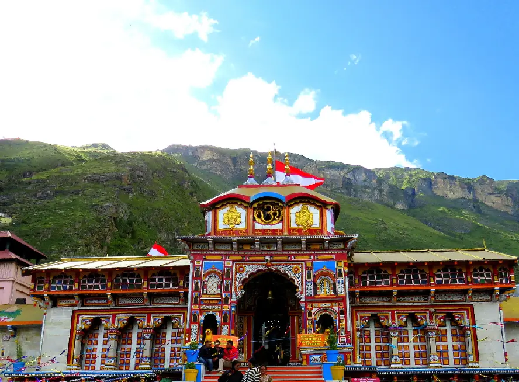

Badrinath Temple:
Badarinath or Badarinarayana Temple is a Hindu temple dedicated to Vishnu. It is situated in the town of Badrinath in Uttarakhand, India. The temple is also one of the 108 Divya Desams dedicated to Vishnu for Vaishnavas, who is worshipped as Badrinath. It is open for six months every year (between the end of April and the beginning of November), because of extreme weather conditions in the Himalayan region. The temple is located in Garhwal hill tracks in Chamoli district along the banks of Alaknanda River. It is one of the most visited pilgrimage centers of India, having recorded 2.8 million (28 lakh) visits in just 2 months in 2022. It is one of the Char Dham pilgrimage sites.
Brihadeswara Temple:

The Brihadeeswarar Temple in Thanjavur is one of the oldest temples in India, dating back to the early 11th century. Built by the Chola emperor Rajaraja I, this massive structure is dedicated to Lord Shiva. The temple’s towering vimana (temple tower), which stands over 200 feet tall, is its most striking feature. It’s part of the UNESCO heritage temples in India, reflecting the importance of preserving this piece of history. If you’re planning an ancient temple tour in India, this temple should definitely be on your list.
Chennakeshava Temple:

Chennakeshava Temple, also referred to as Keshava, Kesava or Vijayanarayana Temple of Belur, is a 12th-century Hindu temple in, Hassan district of Karnataka state, India. It was commissioned by King Vishnuvardhana in 1117 CE, on the banks of the Yagachi River in Belur, an early Hoysala Empire capital. The temple was built over three generations and took 103 years to finish. It was repeatedly damaged and plundered during wars, repeatedly rebuilt and repaired over its history. It is 35 km from Hassan city and about 220 km from Bengaluru.
Jagapathi Bramha Mandir:

Located in the sacred town of Pushkar, the Brahma Temple is unique because it is one of the few temples in India dedicated to Lord Brahma. This temple is believed to be over 2000 years old and is one of the oldest Hindu temples in India. Pilgrims from all over the world visit this temple, especially during the Pushkar Fair. Its spiritual significance and historical background make it a key site in any ancient temple tour India.
Kailashanath Temple:

At Ellora, Maharashtra, you’ll find the incredible Kailasa Temple, carved out of a single rock. This 8th-century wonder is one of the oldest Hindu temples in India. Dedicated to Lord Shiva, the temple features exquisite carvings and is a part of the Ellora Caves, a UNESCO World Heritage Site. The sheer effort that went into creating this temple makes it one of the most beautiful ancient temples in India, and a visit here offers a deep connection to the ancient Indian past.
Konark Sun Temple:

The Konark Sun Temple in Odisha is a 13th-century architectural marvel dedicated to the Sun God. Shaped like a giant chariot with wheels and horses carved into stone, it’s undoubtedly one of the most incredible ancient temples in India. Though partially in ruins, the grandeur of this temple remains unmatched. It is one of the Famous Oldest Temples in India, and for those interested in history and architecture, this is a place you cannot miss.
Lingaraj Temple:

One of the oldest surviving temples in India, Lingaraj Temple in Bhubaneswar is a brilliant example of ancient Kalinga architecture. Built in the 11th century, this temple is dedicated to Lord Shiva. The towering structure is still an active place of worship and one of the oldest temples in India. Its cultural and religious significance makes it a must-visit for anyone interested in Indian temples with a rich history.
Meenakshi Temple:

Madurai’s Meenakshi Temple is among the oldest temples in India and is dedicated to Goddess Meenakshi and Lord Sundareswarar (Shiva). This vibrant temple is over 1000 years old and features stunning gopurams (temple towers) adorned with colorful sculptures. The temple is not just a religious destination but also an artistic marvel, making it one of the historic temples of India. It’s a key stop for any traveler wanting to experience the religious depth of southern India.
Mundeshwari Temple:

The Mundeshwari Devi Temple (also spelled Mundesvari) is a Hindu temple, located at Ramgarh Village, 608 feet (185 m) on the Mundeshwari Hills of Kaimur plateau near Son River, in the Bhojpuri region of Indian state of Bihar. It is an Archaeological Survey of India (ASI) protected monument since 1915. The ASI has dated the structure to 108 CE making it the oldest Hindu temple in the world.
Shore Temple:

The Shore Temple in Mahabalipuram is another gem among the oldest temples in India. Built in the 8th century, it stands on the coast overlooking the Bay of Bengal, which makes it even more beautiful. The temple is dedicated to both Lord Shiva and Lord Vishnu, and its stunning architecture is one of the reasons why it is a favorite among visitors. This ancient structure, part of the historic temples of India, is a reminder of the Pallava dynasty’s craftsmanship.